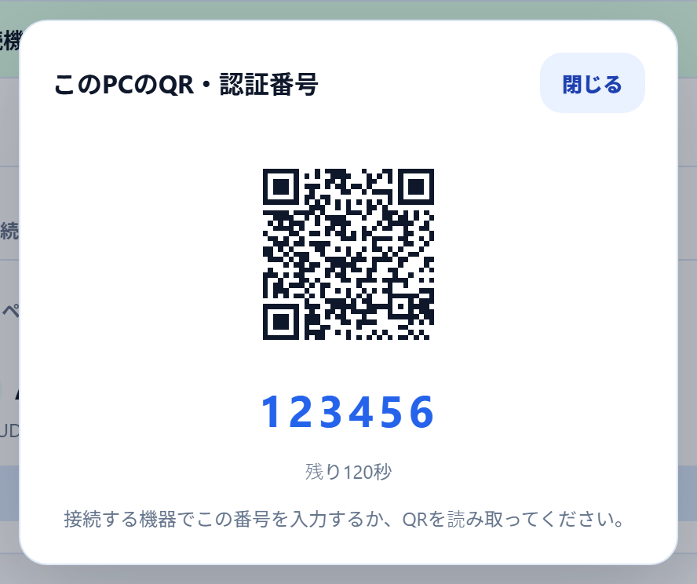
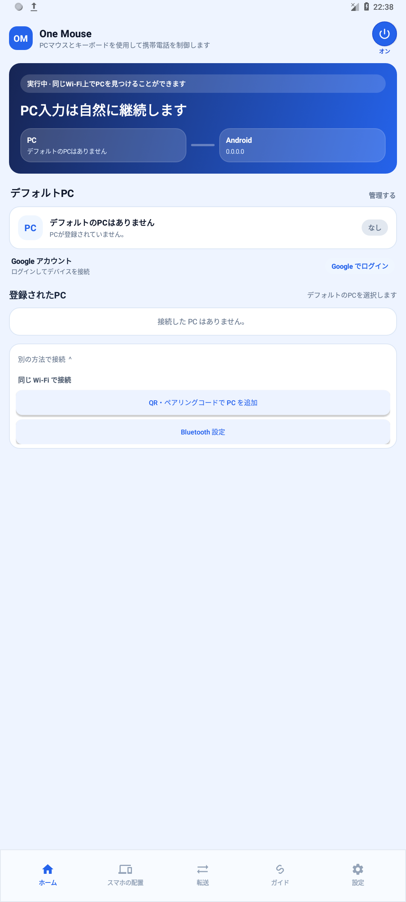
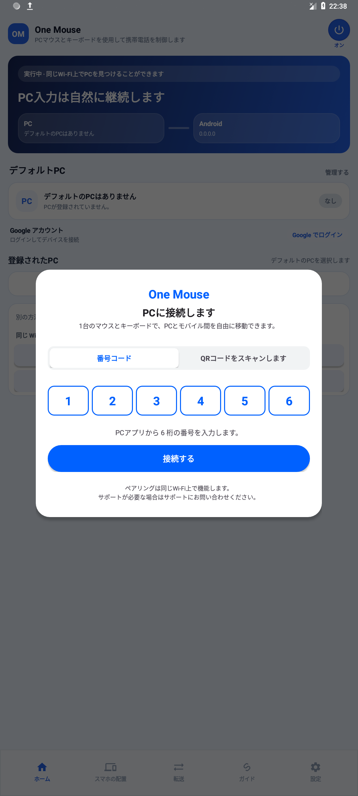
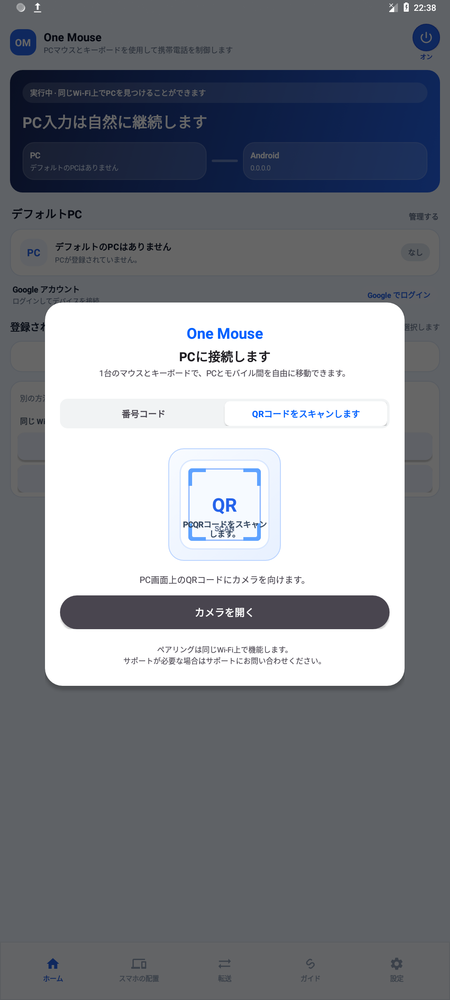
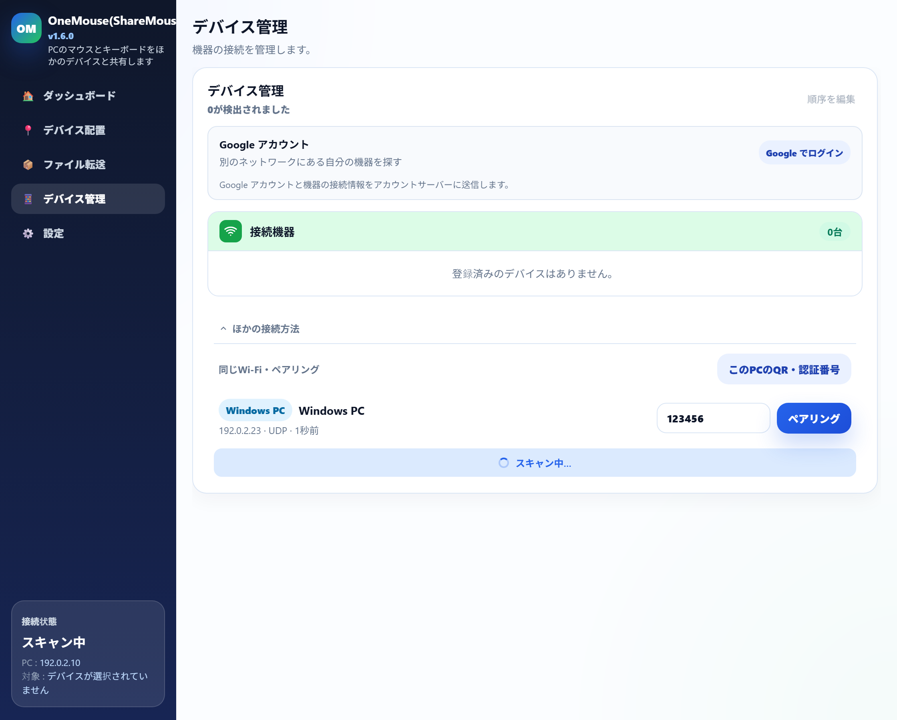
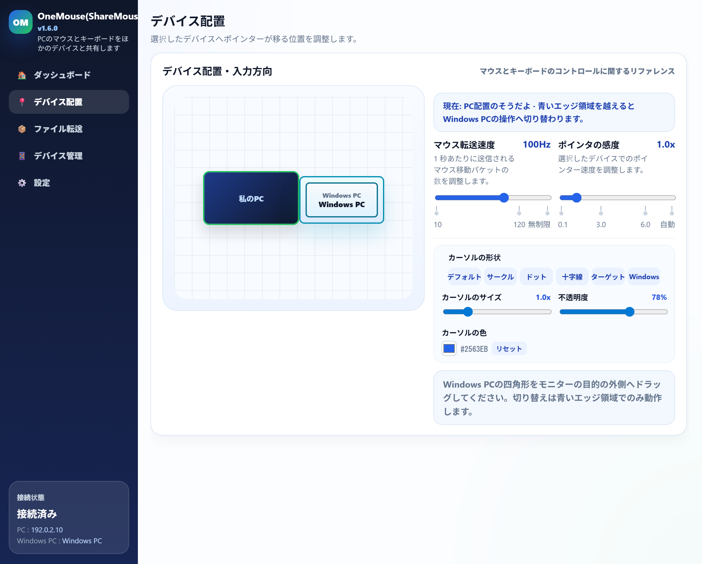

使い方ガイド
初回接続からよく使う機能まで、順番に。
初回接続からよく使う機能まで、順番にご案内します。スクリーンショットの送信や、 AndroidからWindows PCを操作する手順もこちらで確認できます。
Androidを5分で接続
Androidとの初回接続は、この順番どおりに進めるだけです。
PCとAndroidの現在の画面に沿った手順です。以下は同じWi-FiでのLANペアリングです。Androidを操作するにはアクセシビリティ権限が必要です。MacはMac接続ガイドをご覧ください。
Googleアカウントで接続する場合
PCとAndroidの両方で同じGoogleアカウントにログインし、アカウントのデバイス一覧を確認します。Googleログインは任意です。以下のQR・6桁コードによるLANペアリングは、ログインなしで利用できます。
両方のアプリを同じWi-Fiで起動
WindowsとAndroidでOneMouseを起動し、同じWi-Fiに接続します。
Androidのアクセシビリティを許可
PCから操作するには、AndroidでOneMouseのアクセシビリティサービスを有効にします。Android 13以降では、PC検索のために「付近のWi-Fiデバイス」の許可を求められる場合があります。
PCのQR・認証番号を開く
PCのデバイス管理 → ほかの接続方法 → このPCのQR・認証番号を開き、現在表示されている6桁コードまたはQRを確認します。
スマホからPCを追加
Androidのホームで別の方法で接続 → QR・ペアリングコードで PC を追加を開きます。番号コードで6桁を入力して接続するを押すか、QRスキャンのタブでカメラを開くを押し、PCのQRを読み取ります。どちらか一方で接続できます。
登録されたPCと接続状態を確認
Androidの登録されたPCに対象のPCが表示され、接続できていることを確認します。
スマホの配置を合わせて使います
スマホの配置をスマホの実際の方向に合わせます。対応するPC画面の端へマウスを移動すると、PCのマウス・キーボードでスマホを操作できます。
最新のペアリング画面を見るPCコード → スマホで追加 → 番号コードまたはQR
方法Aと方法Bは選択肢です。番号の入力とQRスキャンを両方行う必要はありません。




画像のコードやデバイス名は説明用の例です。ご自身のPCアプリに現在表示されているコードを使用してください。 画像を押すと原寸で確認できます。
リモート操作
リモート画面はデバイス管理から開きます。
デバイス管理でペアリング済みのAndroidの行にあるリモート操作アイコンを押すと、スマホ画面を表示する別ウィンドウが開きます。初めて開くときは、Androidの画面キャプチャの承認が必要です。
Androidウィンドウでの操作
- 左クリック・ドラッグ・ホイールがそのまま伝わります。
- 右クリック = 戻る、ホイールクリック = ホーム。
- PCキーボード（日本語入力を含む）は、スマホの現在の入力欄へ送られます。
- 画面が空白に見えるときは、キャプチャの承認ポップアップを確認し、リモート操作をオフにしてから再度オンにしてください。
Windowsのリモート画面で右ボタンドラッグ
デバイス管理のリモート操作アイコンか、既定のCtrl+Alt+Shift+1~9で開きます。 右ボタンドラッグで操作先PCのブラウザーに設定したジェスチャー拡張を使えますが、 Android用ジェスチャーとは別の機能です。
デバイスの行とアイコン

開いたリモート操作ウィンドウ

Android → Windows
スマホからPCの画面を開いて操作します。
PCの画面を見ながらタッチでクリックしたり、カーソルを動かしたり、スマホのキーボードで文字を入力できます。PCとAndroidの両方に、この機能に対応した最新アプリが必要です。
リモート画面を開く
- PCでOneMouseを起動します。同じWi-Fiでペアリングするか、同じGoogleアカウントでデバイスを接続します。
- Androidアプリの登録済みPC一覧で、対象PCのリモート画面をタップします。
- PCに表示されたリクエストを確認して許可を押します。自分のスマホで今後も使う場合は、この機器を常に許可を選べます。
- 画面がつながったらタッチで操作できます。右側の設定アイコンから操作パネルを開きます。
使いやすい操作モードを選びましょう
- タッチモード：画面上の目的の位置をタップしてクリックし、指を動かしてドラッグします。
- カーソルモード：指を滑らせてポインターを動かし、タップでクリックします。
- 長押しで右クリックします。カーソルモードでは、2回目のタップを押したまま動かすとドラッグできます。
- 2本指で拡大・縮小できます。等倍では2本指の移動でPCをスクロールし、拡大中は表示範囲を移動します。
- キーボードで文字を入力できます。画面を見るだけなら表示のみをオンにします。

画質・フレームレートと接続の終了
操作パネルで画質と最大フレームレートを選べます。画質変更に対応したPCでは、接続を維持したまま反映されます。実際の解像度やフレームレートはデバイスの性能とネットワークの状態によって変わります。
終了するには操作パネル → 接続を終了を押します。リモート接続を終了してもPCの電源は切れません。Bluetooth接続ではリモート映像を送信できません。
Androidのマウスジェスチャー
右ボタンを押して描くだけで、すばやく操作。
有効にする方法、7種類の描き方と対応範囲を確認できます。
1. ジェスチャーを有効にする
設定 → 入力・クリップボードでマウスジェスチャーをオンにして、使うアプリを選びます（初期設定はオフ）。 PCとAndroidの両方に対応版が必要です。
すべてのアプリを選ぶと、アプリとホーム画面で使えます。 対応範囲を確認する
2. 押して、描いて、離す
PCのカーソルをAndroidのスマートフォンやタブレットに移し、選択したアプリを開きます。
- ページ本文の上で右ボタンを押し続けます。
- 表示された方向を順番に描き、赤い軌跡の横で操作を確認します。
- 離すと実行します。描いている間はスクロールしません。
矢印と縦ゲージは方向と描いた長さによるスクロールの強さを示し、 ページ内の位置や正確な移動距離ではありません。
| ジェスチャー | 操作 |
|---|---|
| ← | 戻る左に描くと前のページや画面に戻ります。 |
| → | 進む右に描くと戻った後のページに進みます。 |
| ↑ | 上にスクロール上に描いて離します。長く描くと多く、短く描くと少し移動します。 |
| ↓ | 下にスクロール下に描いて離します。長く描くと多く、短く描くと少し移動します。 |
| ↓ → | アプリを最小化アプリを閉じずにホーム画面へ移動します。 |
| ↑ ↓ | 再読み込み対応するブラウザーでページを再読み込みします。 |
| ↑ → | 最近のアプリ最近のアプリ一覧を開き、別のアプリを選びます。 |
うまく動かない場合
- Androidの直接操作用です。Windows・Macやミラーリング画面は対象外です。
- 進む操作は履歴ページに戻ります。進む・再読み込みにはブラウザーの対応が必要です。
- 本文上でスクロールを始めます。動かさず短く右クリックすると従来の動作を維持します。
- 移動量はアプリによって異なり、ホーム・アプリ一覧では1回だけスワイプします。
ファイル・クリップボード
ファイルは転送画面、クイックドロップ、PC-to-PCのドラッグで送ります。
- 転送画面、または画面上の小さなドロップゾーンにファイルを置くと、選択したAndroid、Windows PC、Macへ送られます。
- Windows PC間、またはWindowsとMacのLAN接続では、ファイルをつかんだまま配置した画面の境界を越えて対象へ置くと転送されます。
- AndroidからPCへ送る
- 開始できないときは、接続状態と選択中のデバイスを確認してください。
クイックドロップ
- Ctrl+Alt+Dでドロップゾーンを隠したり表示したりします。
- 位置と状態はPCアプリに保存されます。
クイックドロップ画面

スクリーンショットの撮影・送信
必要な部分を撮って、使いたいデバイスへ。
自分のPCだけでなく、操作中の別のデバイスの画面も撮影できます。プレビューからコピー・保存したり、接続したデバイスのクリップボードへ送信したりできます。
撮影して送信する手順
- Windowsで初期設定のショートカットCtrl+Alt+Sを押します。別のデバイスを操作中ならその画面を、操作中のデバイスがなければ自分のPC画面を撮影します。
- ドラッグして撮影範囲を選ぶか、ツールバーの全画面を押します。
- PCに開いた小さなプレビューでコピーまたは保存を押します。別のデバイスで使う場合は送信を押し、送信先を選びます。
- 受信したデバイスで、画像の貼り付けに対応したアプリを開いて貼り付けます。
ショートカットを変更した場合は、設定したキーを使ってください。範囲選択中にEscまたはキャンセルを押すと、画像を送信せずに閉じます。

接続と権限を確認してください
- 画像の送信にはWi-Fi・LAN接続と、両方のアプリでの機能対応が必要です。Bluetooth接続のみのデバイスには送信できません。
- Android画面の撮影にはAndroid 11以降とユーザー補助の権限が、Mac画面の撮影には画面収録の権限が必要です。保護された画面は撮影できない場合があります。
- Androidへ送信した画像は、貼り付けに対応したアプリで使ってください。送信後に自動で貼り付けたり、ギャラリーへ保存したりすることはありません。
モバイル → PC
スマホで選んだファイルとテキストをPCへ送ります。
LANで送るときは、モバイルアプリのホームで既定のPCを選び、ペアリング・接続を 確認してください。ファイルは転送タブまたはAndroidの共有メニューから、テキストは選択メニューのOneMouse to PCから送れます。
ファイルを送る
- モバイルアプリの転送タブで、ファイルを選んでPCへ送るを押します。
- 送るファイルを選ぶと、現在選択中のPCへ送信されます。
- 写真・書類アプリでは、共有からOneMouseを選んでも送れます。
テキストを送る
- Androidでテキストを長押しして選択し、その他を開きます。
- OneMouse to PCを押すとPCのクリップボードへ送られます。
- 最初に表示されないときは、アプリ管理でOneMouseを一度オンにしてから選び直してください。
PCで受信したファイルを探す
PCの設定 → 一般 → ファイル転送 → 受信ファイルの保存先でフォルダーを変更 して保存先を選び、フォルダーを開くで確認します。メイン・サブのどちらでも使えます。
テキスト送信画面を見るAndroidの選択メニューでOneMouse to PCを有効にして使う手順です。


通知・返信
スマホの通知をPCで読み、対応する通知に返信します。
通知の受信と履歴
AndroidアプリでPCに通知を送るをオンにし、通知へのアクセスを許可して、 送信するアプリを選びます。メインPCの設定 → 通知でデバイス通知表示をオンにします。
同じ画面で通知履歴と保存期間を確認できます。 通知設定の詳細
リアルタイム通知に返信
PCとAndroidが返信対応版で、元の通知が自由入力に対応すると返信が表示されます。 入力して送信かCtrl+Enterを押すと、スマホの元のアプリから送ります（Enterは改行）。
番号ショートカット
デバイス一覧の番号で、すぐに接続します。
Ctrl + Alt + 1~9
- 既定ではメインPCの機器一覧にあるLAN機器の先頭9台にCtrl+Alt+1~9が割り当てられます。変更方法はショートカットの説明を確認してください。
- 番号を押すと、そのデバイスに接続します。
- 現在操作中の機器と同じ番号をもう一度押すと、入力操作を解除します。
自動再接続
- オンにしておくと、最後のデバイスが再び現れたときや、準備できたデバイスが一つだけのときに、PCアプリが自動で再接続します。
機器の順序とショートカット番号を変更
メインPCにLAN機器が2台以上ある場合、デバイス管理 → 順序を編集を押します。 ハンドルや↑・↓で移動すると自動保存され、完了で終了します。 接続・リモート画面のショートカット番号にも同じ順序が適用されます。
Bluetooth
Wi-Fiルーターがなくても、Bluetoothで接続できます。
Windows↔Android、Windows↔WindowsをBluetoothで直接つなぎ、入力・クリップボード・ファイルをやり取りします。
こんなときに便利
- 共有Wi-Fiがない部屋・屋外・車内
- ゲストWi-Fiやファイアウォールがデバイス検索を妨げるとき
- キーボード・クリップボード中心の手軽な利用
知っておきたいこと
- 大きなファイルやモバイルのリモート画面にはWi-Fi・LANをおすすめします。
- MacのBluetoothはベータです（アプリ設定でオン、既定はオフ）。公式サポートはLANで、Macの画面・ウィンドウ共有はLAN専用です。
接続の手順
Androidの設定タブでBluetoothモードをオン
WindowsのBluetooth設定でスマホを一度ペアリング
PCアプリが自動接続 → デバイス管理に表示
Wi-Fiと同じように入力・クリップボード・ファイルを利用
Bluetoothのサブデバイス画面

別のWindows PC
Windows PC同士は、デバイス管理 → 接続 → 配置の順でつなぎます。
接続する
- 両方のWindows PCでOneMouseを起動します。同じGoogleアカウントにログインするか、LANペアリングのために同じネットワークへ接続します。
- LANでは、操作元のPCのデバイス管理 → ほかの接続方法で相手のWindows PCを選び、6桁コードを入力してペアリングします。コードは相手のPCのデバイス管理 → ほかの接続方法 → このPCのQR・認証番号で確認します。LANペアリングはログイン不要です。
- 登録された相手のPCの接続状態を確認し、必要に応じて接続するスイッチをオンにします。配置エディタで実際の位置に合わせます。
- その方向へマウスを渡すと別のPCを操作でき、ファイルも境界へのドラッグでやり取りできます。
ペアリングと配置の画面


Mac · 公開サポート
macOS 13以降のApple Silicon MacをWindowsから接続します。
Macに公開DMGをインストールし、OneMouseのLAN接続をWindowsから開始・管理します。以下の5ステップで接続できます。
WindowsとMacを同じローカルネットワークにつなぎます
Windows 10/11とmacOS 13以降のMacでOneMouseを起動し、同じWi-FiまたはLANに接続します。
Macで必要な権限を許可します
入力にはアクセシビリティを許可します。macOS 15以降では検出のためローカルネットワークも許可し、macOS 13/14ではこの項目が表示されない場合があります。
Windowsのデバイス管理でMacを選びます
検出されたMacの名前とmacOS表示を確認し、Windows側からペアリングを開始します。
Macに表示された6桁コードをWindowsへ入力します
Macに表示中の6桁コードをWindowsの入力欄へ入れて、ペアリングを完了します。
WindowsでMacを配置して操作します
配置エディタでMacを実際の方向に置き、その画面境界へマウスを押し出します。以後の接続と配置もWindowsから管理します。
権限
接続先と使う機能に必要な権限だけをオンにします。
Androidの入力にはアクセシビリティサービス、Macの入力にはアクセシビリティが必要です。 Android・Macのリモート画面を見るときは、画面キャプチャ・画面収録を別途許可してください。
キーボードショートカットと適用条件。
以下のPCショートカットは既定値です。PCの設定 → ショートカットでキーの組み合わせを変更し、個別または全体をオフにできます。変更した場合は保存した組み合わせを使ってください。
Windowsアプリの既定ショートカット
| 既定ショートカット | 動作・条件 |
|---|---|
| Ctrl+Alt+1~9 | メインPC：一覧の該当機器の入力操作を開始します。現在操作中の機器と同じ番号をもう一度押すと、操作を解除します。 |
| Ctrl+Alt+Shift+1~9 | メインPC：該当するリモート画面を開くか、既存のウィンドウを前面に表示します。もう一度押しても閉じません。接続ショートカットと同じLAN機器番号を使い、Bluetooth機器は番号の対象から除外します。 |
| Ctrl+Alt+D | クイックドロップの表示 / 非表示。 |
| Ctrl+Alt+S | 操作中のWindows PC・Mac・Androidの画面で範囲を選び、メインPCで受け取ります。他の機器を操作していない場合は、このPCを撮影します。両方のアプリの対応と、対象機器の撮影権限が必要です。 |
| Ctrl+Alt+V | メインPC：認証コードを含むスマートフォンの通知がPCに表示されている間、そのコードをコピーします。先にスマートフォンの通知転送を有効にしてください。 |
| Ctrl+V | 別のPCでコピーした共有ファイルを、このPCで受信して貼り付けます。待機中の共有ファイルがなければ、通常の貼り付けを使用できます。 |
| Ctrl+Alt+Backspace | メインPC：他の機器の操作中に、カーソルを自分のモニター中央へすぐに戻します。 |
Androidを直接操作するとき
以下はAndroidへ送る入力の組み合わせで、上のPCアプリのショートカット設定とは別です。テキスト編集は対象アプリ・入力欄の対応によって異なります。
| 既定ショートカット | 動作・条件 |
|---|---|
| PrintScreen | Android 11以降：直接操作中のスマートフォン画面を撮影してPCへ送ります。アクセシビリティ権限が必要です。 |
| Alt+Shift+↑ / Alt+Shift+↓ | Android画面の明るさを上げる / 下げる。システム設定の変更権限が必要です。 |
| Alt+↑ / Alt+↓ | Androidのメディア音量を上げる / 下げる。 |
| Alt+Tab / Alt+Shift+Tab | 最近のアプリを切り替える / 逆方向へ切り替える。Altを離すと選択したアプリへ移ります。 |
| Ctrl+A / Ctrl+C / Ctrl+X / Ctrl+V | 対応する入力欄で、全選択 / コピー / 切り取り / 貼り付け。 |
| Ctrl+Insert / Shift+Insert / Shift+Delete | 対応する入力欄で、コピー / 貼り付け / 切り取り。 |
| Ctrl+Z | 対応するアプリ・入力欄で元に戻します。 |
WindowsキーボードでMacを操作するとき
既定のWindowsショートカット設定では、CtrlはCommand、AltはOptionとして送られます。Macアプリのキーボード設定で、Mac本来の修飾キー方式へ変更できます。上のWindowsアプリのショートカットでCtrlをCommandに置き換えるという意味ではありません。